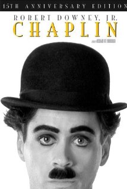
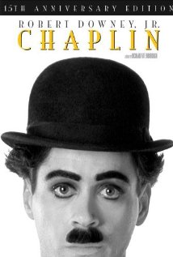
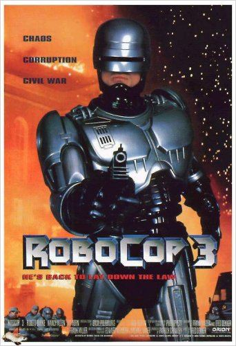
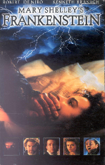
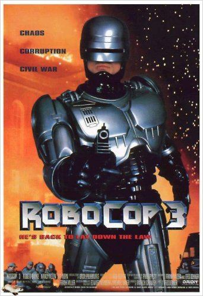
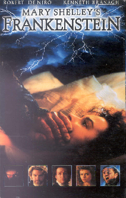

1991-1995
Filmes que marcaram a época :
- A Família Addams, lançado no dia 20/12/1991, dirigido por Barry Sonnenfeld
- Chaplin, lançado no dia 08/01/1992, dirigido por Richard Attenborough
- Dennis, o Pimentinha, lançado no dia 25/06/1993, dirigido por Nick Castle.
- RoboCop 3, lançado no dia 14/01/1994, dirigido por Fred Dekker
- Frankenstein de Mary Shelley, lançado no dia 20/01/1995, dirigido por Kenneth Branagh.
 

 



Músicas de sucesso na época:
1991:
- Aaron Neville - Everybody Plays The Fool
-
A-Ha - Early Morning
- A-Ha - I Call Your Name
- Air Supply - Whitout You
- Alias - Waiting For Love
- Amy Grant - Baby Baby
- Amy Grant - Every Heartbeat
- Amy Grant - That's What Love Is For
- Ana Belén - Luz da lua
- Angélica - Amor, amor
1992:
- 2 Unlimited - Get Ready For This
- Adriana Calcanhoto - Mentiras
- Alceu Valença - Sete desejos
- Amy Grant - Good For Me
- Annie Lennox - Walking On Broken Glass
- Annie Lennox - Why
- Aretha Franklin - You Make Me Feel Brand New
- Arrested Development - People Everyday
- Arrested Development - Tennessee
1993:
-
2 Brothers On The 4th Floor - Never Alone
-
2 Unlimited - Faces
- 2 Unlimited - No Limit
- 2 Unlimited - Tribal Dance
- 2Pac - I Get Around
- 2Pac - Keep Ya Head Up
- 4 Non Blondies - Spaceman
- 4 Non Blondies - What's Up
-
AB Logic - The Hitman
- Ace Of Base - All That She Wants
- Ace Of Base - Happy Nation
- Aerosmith - Cryin'
1994:
- Gin Blossoms - Allison Road
- Gin Blossoms - Found Out About You
- Gloria Estefan - Conga
- Gloria Estefan - Turn The Beat Around
- Green Day - Basket Case
- Guns N' Roses - Since I Don't Have You
- Haddaway - Rock My Heart
- Ice MC - It's A Rainy Day
- Ice MC - Think About The Way
- Immature - Never Lie
1995:
- Better Than Ezra - Good
- Blackstreet - Before I Let You Go
- Blessid Union Of Souls - I Believe
- Blessid Union Of Souls - Let Me Be The One
- Blues Traveler - Run-Around
- Blur - Country House
- Bob Marley - Keep On Moving
- Bon Jovi - Someday I'll Be Saturday Night
- Bon Jovi - Something For The Pain
- Bon Jovi - This Ain't A Love Song
- Boyz II Men - Thank You
- Boyz II Men - Water Runs Dry
Os acontecimentos que marcaram a decada de 1991-1995 foram:
- Em 1991 começou a ser comercializada a soja transgênica (modificada geneticamente).
- 1992 – Primeiro navegador multiplataforma (modo linha de comando)
- 1993 - O NCSA da Universidade de Illinois lança seu navegador
Mosaic 1.0
- 1994 – Começa a popularização da WEB
- Em 5 de julho de 1995 é realizado o primeiro processo de clonagem de um mamífero (ovelha Dolly).